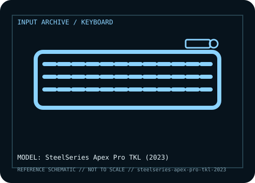

[ KEYBOARDS AND INTEGRATED POINTING DEVICES // IDENTIFIED COMPONENT ]
SteelSeries Apex Pro TKL (2023)
Wired tenkeyless keyboard from the 2023 Apex Pro refresh, distinguished by OmniPoint 2.0 adjustable magnetic switches, Rapid Trigger features, an OLED Smart Display, and a volume roller.

MODEL IDENTIFICATION: Apex Pro TKL (2023 wired edition; distinguish from earlier and wireless revisions). Verify the bottom label, regional SKU, receiver, and revision against the sources before repair or compatibility claims.
Model specifications
| Catalog subcategory | Keyboards and integrated pointing devices |
|---|---|
| Form factor / layout | Tenkeyless layout omits the numeric keypad while retaining the function row, navigation cluster, and arrow keys. Regional key layouts are available. |
| Key mechanism / controls | OmniPoint 2.0 Hall-effect magnetic switches on supported adjustable keys, with configurable actuation and dual-action assignments. Remaining keys may use conventional mechanical switches; do not assume every key has the same sensor. |
| Wired protocol | Wired USB connection with a detachable USB-C cable on the 2023 TKL edition. No Bluetooth or 2.4 GHz wireless mode. |
| Wireless protocol | None on this 2023 wired model. Wireless Apex Pro TKL revisions are distinct products with different host connectivity and power requirements. |
| Host compatibility | USB keyboard input is suitable for compatible Windows, macOS, and Linux hosts, but advanced actuation, profiles, display functions, and firmware management are tied to SteelSeries GG and supported software. The OLED display does not guarantee full configuration support on non-Windows systems. |
| Configuration / software | SteelSeries GG configures supported actuation points, Rapid Trigger, dual-action keys, RGB, macros, and OLED options. Back up profiles and identify the exact generation before applying firmware. |
| Revision / service caveat | This record is specifically the wired 2023 TKL, not the 2023 wireless TKL, full-size Apex Pro, Mini, or earlier TKL generation. OmniPoint 2.0 capabilities should not be generalized to conventional keys. |
Preservation and service notes
Record the unit label, keyboard layout, switch option, cable or matched receiver, host OS, and test mode before troubleshooting. For wireless models, distinguish Bluetooth pairing from proprietary receiver operation; for wired models, verify that the USB connection carries data rather than power only.
Keep saved layouts and firmware with the exact model/revision. Disconnect power before switch or keycap service, use manufacturer-safe cleaning methods, and do not infer a unit’s configuration from a broad product-family name.
Manufacturer and independent references
- SteelSeries — Apex Pro 2023 product pagePrimary manufacturer product reference for identifying this model and its stated feature set.
- RTINGS — SteelSeries Apex Pro TKL (2023) reviewAdditional manufacturer documentation or independent model-specific testing; consult the revision/region applicable to the physical unit.
Product pages and support resources can change. Preserve the applicable manual or page revision when documenting a particular keyboard.